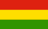

República de Bolivia
Bolivia
Bolivia is a South American country, La Paz is the Capital. The land has nearly 8 Million inhabitants. The languages spoken in the country are Spanish, Quechua, Aymará.
Mention Bolivia and one thinks of Butch Cassidy and the Sundance Kid, tin mines, and unstable governments, but there are some small karst areas and a total of eight caves:
- The countries longest and deepest cave, the Gruta de Umajalanta, (L=4,300m, VR=-164m) is located near the village of Torotoro near Potosi.
- The country's only show cave, the
 Gruta San Pedro
can be found at Sorata, 150km north of La Paz.
Gruta San Pedro
can be found at Sorata, 150km north of La Paz.
- Whilst the country's highest cave, the Cueva de Chocaltaya (5,400m asl) is in the Nevada de Chocaltaya.
- Sights of Bolivia
 Cueva del Diablo
Cueva del Diablo Potosi Cooperative Mines
Potosi Cooperative Mines- Qala Qala
- Cavernas de Repechon
- Gruta San Pedro
- San José Silver Mine
- Additional Information about Bolivia
 Map of Bolivia
Map of Bolivia- Rodolfo Becerra De La Roca (1998):
La espeleología en Bolivia,
El Guácharo, #43 / August 1998: 25-29.
Account of the development of speleology in Bolivia which started in the 60's, until 1995 with the beginning of the Bolivian Speleological Society.
- Alan Murphy (2002): Bolivia Handbook, 448 pp, numerous maps. SB £14.99, Footprint Handbook, Bath, UK.
 Humajalanta '98 Expedition,
includes pictures of Gruta San Pedro.
Humajalanta '98 Expedition,
includes pictures of Gruta San Pedro.- Toro Toro's Caves
an 5 day trip to Humajalanta Cave.
Nearby are famous dinosaur tracks.
- Murciélagos de Bolivia,
Bats of Bolivia.
(
 )
) - In Bolivia the Bulls Have Them,
dinosaur tracks near Humajalanta Cave.